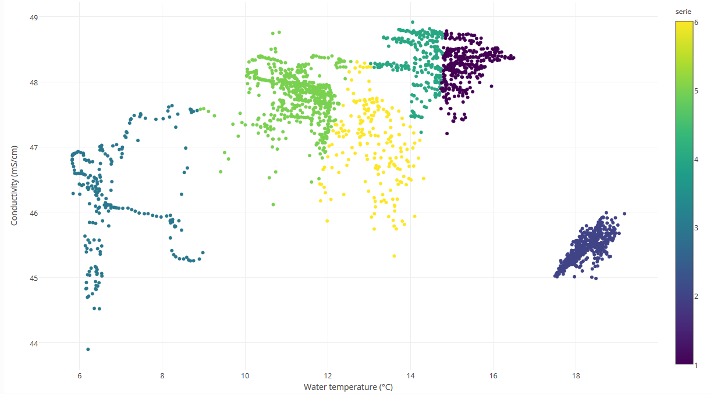

Data from buoys installed in the Belgian Part of the North Sea.
How to interpret this dataset
Query options
-
Timeframe: Starting and stopping date for the query.
-
Stations: List of stations to be included in the query.
Available columns
-
ZTime:
-
Station:Name or code of sampling station or receiver code.
-
Time: Time in UTC, beginning of sample timeperiod.
-
Latitude: Center latitude in decimal degrees, WGS84.
-
Longitude: Center longitude in decimal degrees, WGS84 .
-
Air temperature (°C): Air temperature in °C.
-
AtmPress (mBar): Atmospheric pressure in mBar.
-
AtmPress(mBar):
-
Avg Wind direction (deg): Direction of the wind in deg.
-
Avg Wind speed (m/s): Speed of the wind in m/s.
-
Chlorophyll (µg/L):
-
Conductivity (mS/cm):
-
Dissolved oxygen (µM):
-
DO (mg/l): Oxygen dissolved in the water body in mg/l.
-
Level Harbour (mTAW) 1min:
-
Level Harbour (mTAW): Waterlevel in mTAW measured in Ostend at the time.
-
Level Spuikom (mTAW): Waterlevel in mTAW measured in the Spuikom at the time.
-
NH3 (ppb):
-
NO3 (ppb): Concentration of nitrate in the water body, expressed in ppb.
-
Oxygen sat. (%):
-
pCO2 air (ppm):
-
pH (raw):
-
PO4 (ppb):
-
Rain (mm): Accumulation of rain measured in mm.
-
Rain15 (mm): Accumulation of rain (15) measured in mm.
-
RelHumidity (%): Relative humidity in %.
-
RelHumidity(%):
-
Salinity (PSU): Salinity of the water body, expressed in Practical Salinity Units.
-
SiO2 (ppb): Concentration of silicate in the water body, expressed in ppb.
-
SolarEnergy (W/m²): Solar energy in W/m².
-
Tilt X (deg):
-
Tilt Y (deg):
-
Turbidity (NTU):
-
Turbidity(FBU):
-
Voltage (V): Battery power, voltage in V.
-
Water pressure (dBar):
-
Water temperature (°C): Temperature of the water body, expressed in degrees Celcius.
-
Watercurrent (cm/s):
-
Watercurrent (deg):
-
xCO2 air (ppm):
-
xCO2 Air:
-
xCO2 sea (ppm):
Abstract
A set of buoys are maintained by the Flanders Marine Institute (VLIZ): two in the sluice dock (Ostend) and one at the C-power windfarm, on the Thornton Bank. All buoys are continuously measuring an array of environmental parameters.In conjunction with the research vessel RV Simon Stevin, the Thornthon measuring buoy is part of the oceanographic component of ICOS Belgium (The Integrated Carbon Observation System).
The Thornton buoy carries sensors for both LifeWatch and ICOS. Management is organized as part of ICOS. ICOS is a European monitoring network consisting of a large number of observation systems for measuring greenhouse gasses. The observation systems are spread across Europe and consist of three major components:
- An atmospheric component with high measurement towers
- An ecosystem component with measurement towers that observe fluxes
- An oceanographic component with observation systems on ships and buoys
How to cite these data
When using this tool, please acknowledge the LifeWatch Data Explorer in your work with the statment written below. Please also acknowledge the individual datasets used and mind their individual licenses: Find the complete list in this link to the IMIS metadata record of this data type.
This work makes use of the LifeWatch Data Explorer provided by VLIZ and funded by Research Foundation - Flanders (FWO) as part of the Belgian contribution to LifeWatch.
If you retrieved these data using the LifeWatch Data Explorer R package, you should also cite it as:
Francisco Hernandez, Nick Dillen and Salvador Fernández-Bejarano (2021). lwdataexplorer: Access to data from the LifeWatch Data Explorer. R package version 0.0.0.9000. https://lifewatch.github.io/lwdataexplorer/